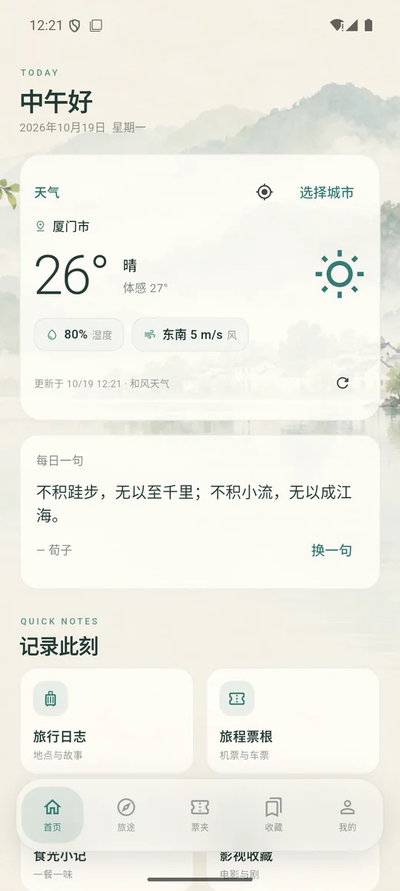
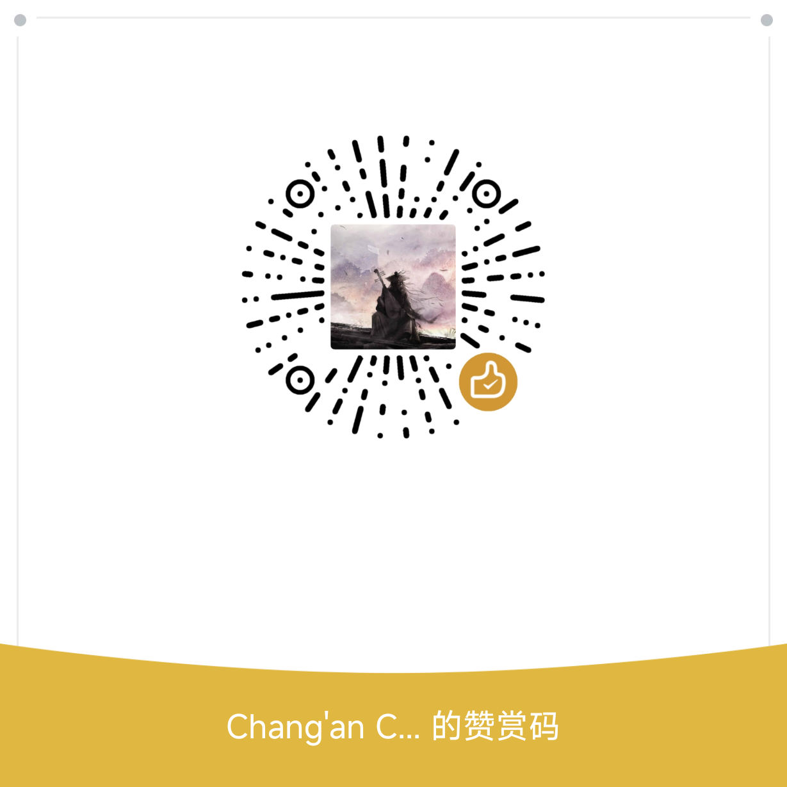

Travel journals
Collect places, photos and reflections. Explore your footprints on a full-screen map.
The places you went. A ticket you kept. A meal worth remembering. Collect your travels and everyday stories in one quiet, personal space.

A thoughtful home for your memories, across desktop and mobile.
Collect places, photos and reflections. Explore your footprints on a full-screen map.
Keep flight and rail tickets with curved routes, map gestures and landscape viewing.
Remember a favorite meal, its place and the little details that made it yours.
Rate films and series, then flip a collection card to read your reflections.
Arrange words, images and decorative elements into pages of your own.
Choose a cover, edit your profile, and enjoy a birthday greeting on your special day.
Install over your existing version to keep local data. Keep a backup before updating.
For 64-bit Windows 10 and 11. Local journals work offline.
Download installerPhone-friendly navigation, optional local weather and full-screen maps.
Download APKSHA256 checksums · An iOS version is not currently available.
Your journals are stored on your device.
Sign in and choose to sync your library. Social sign-in options depend on enabled providers.
UI language choices do not translate or rewrite your personal entries.
Waylore is free to use. A suggestion, a GitHub star or an optional contribution helps keep it moving forward.
Contributions are entirely voluntary. They do not unlock features or affect anyone’s access. Thank you for being part of the journey.
Star on GitHub ↗